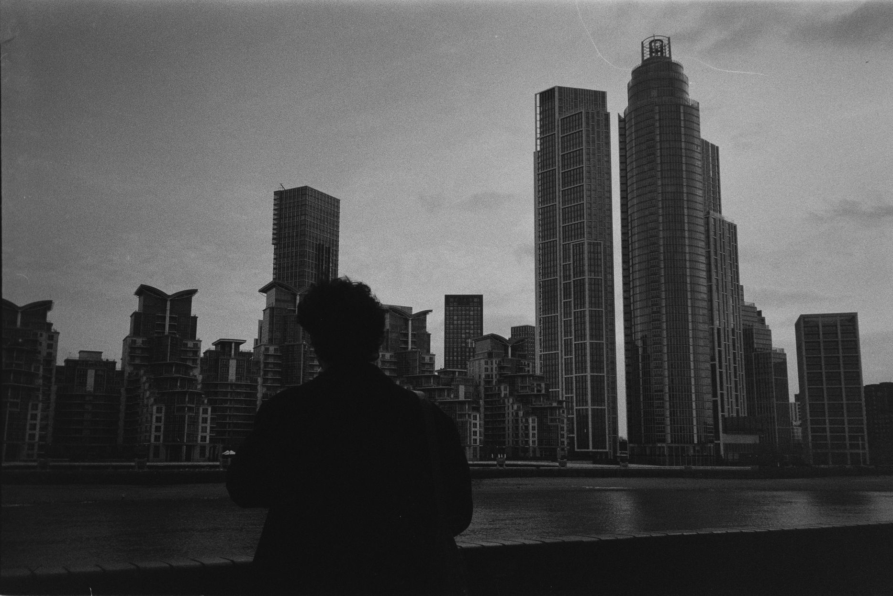
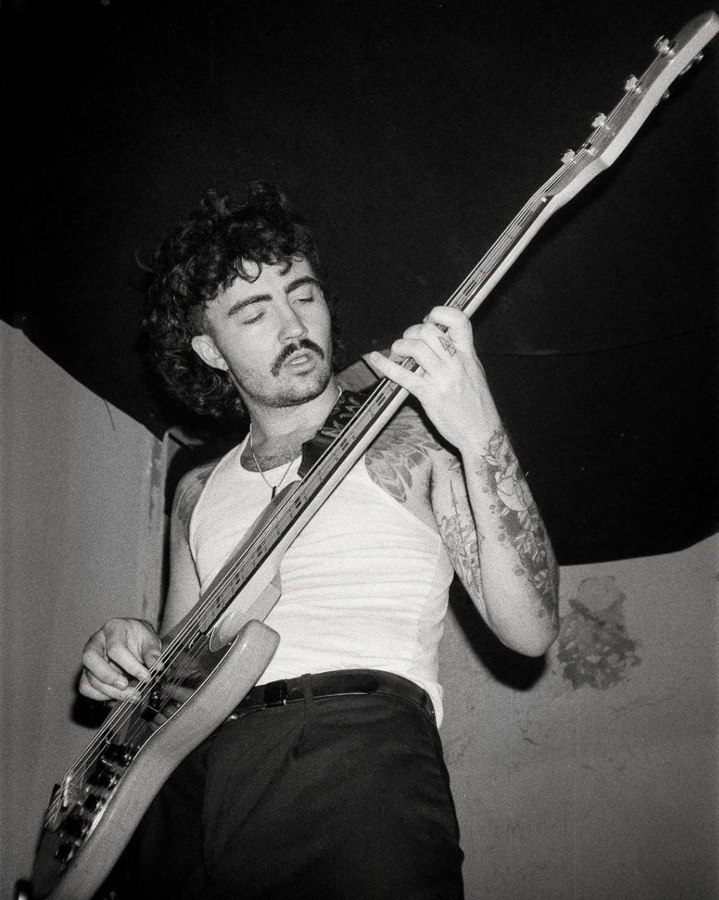

Born in Bilbao, he first pursued studies in audiovisual arts and cinema, driven by his passion for photography and cameras. However, eager to expand his horizons, he later decided to study Computer Engineering at the University of the Basque Country in San Mamés.
His passions include photography, music with his band Full Cab, and software design. He blends his creative side with his technical skills, always seeking new ways to innovate in both art and technology.
